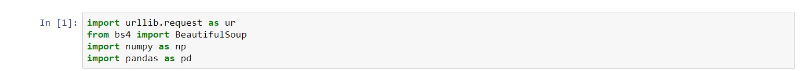
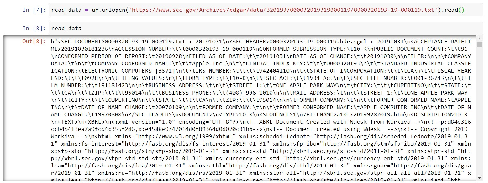
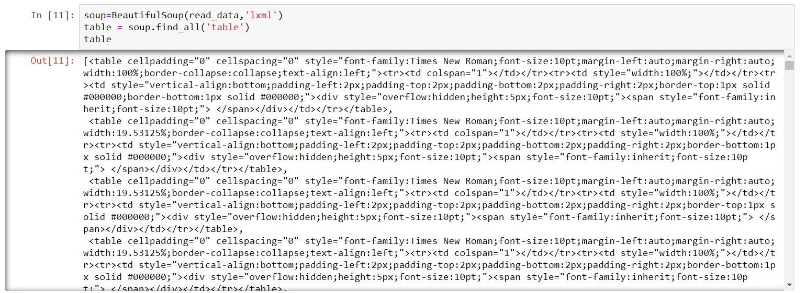

The following sections will teach you how to scrape a website in Python:
Beautiful Soup 4 is a package in Python that allows for the scraping of HTML documents. We can use it to convert raw HTML files into a structure where we can search for certain tags. More in-depth explanations can be found at: https://www.crummy.com/software/BeautifulSoup/bs4/doc/
Now to install BS4. This is made simple in Anaconda:
1) Open Anaconda prompt
2) Run "pip install beautifulsoup4"
BS4 is generally pretty easy to use, at least to do simple operations. In this section, we will run through an example of how to get data from a website using BS4. To make this slightly finance related, we will be using one AAPL's 10-k filing from the EDGAR database.
Apart from importing BS4, we need one other package (urllib.request) to open the file at the end of the URL. There are many other ways to do this, but this is the one I prefer. We also imported Pandas and NumPy as usual.
From the short introduction to this section, you should be able to find the URL of the 10-K that we are going to use. Note, this is the raw text (literally the HTML of the page) of the 10-K, and personally I think this is easier then trying to get the HTML from the webpage that has all the visual enhancements. EDGAR has one of these for all documents published in its database. Now, we need to get the document behind the URL into python. This is where the urllib.request package comes in handy:
We can see by running the above lines of code, we get some version of the website in a form we can't really sort through, but BS4 can.
In this example, we will try to get all the items within "<table>" ... "<\table>" tags in HTML. This corresponds to anything that is displayed as a table. We do this by:
We can see that now we have a list of all HTML code of items in tables from the 10-K in question. We can do this with any other tag by replacing the string in the find_all() method. Outputing this file to html would yield a crude but useable visual version of all tables in the text.
Get all the tables from this document: https://www.sec.gov/Archives/edgar/data/1685715/000168571517000012/0001685715-17-000012.txt
Solution: Comming SoonRealistically, web scraping is only useful if you can do it on a wide number of documents. We hence need to obtain/generate the URL's of several documents. Usually, we can do this by analyzing the patterns within the URL, and generating new ones using the patterns we see. The EDGAR pattern is a bit more difficult, but I have modified a package to return the URL's for most major types of filings. I will be cleaning this up in the comming few days and hopefully releasing this soon.